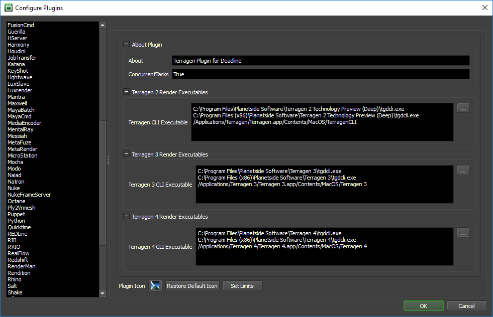

Terragen¶
Job Submission¶
You can submit Terragen jobs from the Monitor.

Submission Options¶
The general Deadline options are explained in the Job Submission documentation, and the Draft/Integration options are explained in the Draft and Integration documentation.
The Terragen specific options are:
Project File: The Terragen project file to render (*.tgd)
Version: The version of Terragen to render with.
Render Node (Optional): Optionally specify the render node to render. Leave blank to use the default in the project.
Submit All Render Nodes as Separate Jobs: If this option is enabled, all render nodes in the project file will be submitted as separate jobs.
Output (Optional): Optionally override the output path in the project file. If rendering a sequence of frames, remember to include the %04d format in the output file name so that padding is added to each frame.
Extra Output (Optional): Optionally override the extra output path in the project file. If rendering a sequence of frames, remember to include the IMAGETYPE.%04d format in the output file name so that padding is added to each frame.
Frame List: The list of frames to render.
Enable Local Rendering: If enabled, Deadline will render the frames locally before copying them over to the final network location. Note that this requires that an Output file be specified above.
Frames Per Task: This is the number of frames that will be rendered at a time for each job task.
Submit Project File With Job: If this option is enabled, the project file will be submitted with the job, and then copied locally to the Worker machine during rendering.
Tile Rendering Options¶
Enable Tile Rendering to split up a frame into multiple tiles.
Enable Tile Rendering: If enabled, the frame will be split into multiple tiles that are rendered individually and can be assembled after.
Tiles in X: The number of tiles in the X direction.
Tiles in Y: The number of tiles in the Y direction.
Single Frame Tile Job Enabled: Enable to submit all tiles in a single job.
Single Job Frame: The frame that will be split up.
Submit Dependent Assembly Job: Submit a job dependent on the tile job that will assemble the tiles.
Cleanup Tiles after Assembly: If selected the tiles will be deleted after assembly.
Error on Missing Tiles: If enabled, then if any of the tiles are missing the assembly job will fail.
Assemble Over: Determine what the Draft Tile Assembler should assemble over be it a blank image, previous output or a specified file.
Error on Missing Background: If enabled, then if the background file is missing the job will fail.
Assemble Over: What the tiles should be assembled over.
Background Image File: The Background image to assemble over.
Plugin Configuration¶
You can configure the Terragen plugin settings from the Monitor. While in power user mode, select Tools -> Configure Plugins and select the Terragen plugin from the list on the left.
Render Executables
Terragen CLI Executable: The path to the Terragen executable file used for rendering. Enter alternative paths on separate lines. Different executable paths can be configured for each version installed on your render nodes.
FAQ¶
Which versions of Terragen are supported?
The commercial version of Terragen 2 and later are supported.
Error Messages and Meanings¶
This is a collection of known Terragen error messages and their meanings, as well as possible solutions. We want to keep this list as up to date as possible, so if you run into an error message that isn’t listed here, please contact Deadline Support and let us know.
Currently, no error messages have been reported for this plugin.

{kind=link}
{kind=link}